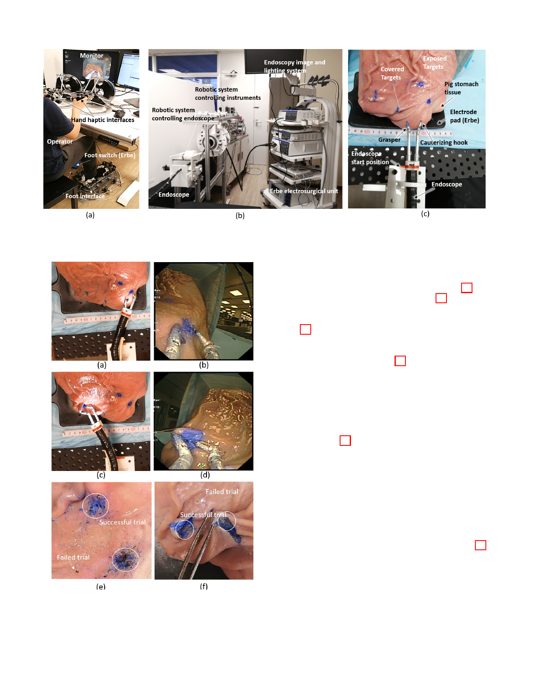

7
Fig. 9. Ex vivo test setup. (a) Master console. (b) Slave robotic system. (c) Surgical instruments and working tissue.
The operators were asked to cut the four target tissue one by
one from right to left. They could see the robotic instruments
and tissue through the endoscopic camera view (Fig.10b and
d). For the exposed target, as shown in Fig.10a and b, the
operator was required to directly cut the tissue within the
marked zone (around 8mm diameter); for the covered target,
see Fig. 10c and d, the operator should lift up the tissue using
the grasper and cut inside (the incision is about 15mm in
length). The trial was regarded as a failed when the operator
did not cut in the target zones (Fig. 10). One set of operation is
complete when all the four targets are successfully reached and
cut. The completion time was from the start of the endoscope
movement to its stop when the final target is cut.
Fig. 10. Surgical operation of (a)(b)exposed and (c)(d) covered targets viewed
from top camera and endoscope camera. Cutting result for (e) exposed and
(f) covered targets.
D. Results
The boxplot of completion time for all subjects and sets
are shown in Fig. 11a. A two-sided Mann–Whitney U test
was used to compare data from simultaneous three tool
operation and bimanual operation with hand clutch. The
time was reduced in all participants by using foot rather
than hand clutch control, with 217.4 s ±93.3 s relative to
312.5 s±112.5 s (p = 0.003). Four of six of the participants had
operation time reduced by 40 - 50% when using foot control
{44.4%, 50.3%, 46.8% , 51.6%}, one participant exhibited a
lower (8.7%) and one a higher (91.3%) time reduction relative
to hand clutch control.
The results of the questionnaire are shown in Fig. 11b.
The participants felt that less mental effort (p = 0.021)
was required in foot control (2.3±0.82) than with hand
clutch (4.0±0.89). The rating of efficiency, comfort and eas-
iness on foot and hand clutch control was not different (p
= 0.74, 0.37, 0.16) but in average slightly higher with the
foot (4.3±0.5, 3.3±1.0, 4.2±1.7) than with the hand clutch
(3.5±1.8, 2.5±1.4, 2.8±1.5). Five of six of the participants
preferred using the foot interface working together with hands
to operate the system. One participant reflected “Foot control is
tiring, especially in the holding gesture to wait the endoscope